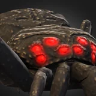
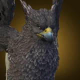
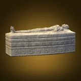
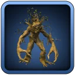

Summons and placeables
Units that abilities, alliances and items create.
Not every unit in a fight came from the shop. Abilities, alliances, commander powers and items create units during the fight. Warspire has 18 summons that move and attack and 5 placeables that stand still. None of them can be bought, and none is drawn from the shared pool.
Every summon and placeable
One line for each way a unit is created. A unit made in several ways has several lines.
| Unit | Kind | Created by | When | How many | Star | Lasts |
|---|---|---|---|---|---|---|
 Rift Echo Rift Echo | Summon | Alliance  Riftborn with 2 counted, carried by members of the alliance Riftborn with 2 counted, carried by members of the alliance | when that member dies | 1 | the star of that member | until it dies or the fight ends |
 Greater Rift Echo Greater Rift Echo | Summon | Alliance Riftborn with 4 counted, carried by members of the alliance | when that member dies | 1 | the star of that member | until it dies or the fight ends |
 Thorn Hound Thorn Hound | Summon | Alliance  Thornkin with 2 counted, carried by one random member Thornkin with 2 counted, carried by one random member | at the start of the fight | 1 | the star of that member | until it dies or the fight ends |
 Carrion Wing Carrion Wing | Summon | Alliance Thornkin with 4 counted, carried by one random member | at the start of the fight | 1 | the star of that member | until it dies or the fight ends |
 Elder Thornwyrm Elder Thornwyrm | Summon | Alliance Thornkin with 6 counted, carried by one random member | at the start of the fight | 1 | the star of that member | until it dies or the fight ends |
 Thorn Sapling Thorn Sapling | Summon | Ability Call Sapling of  Thornwood Seer Thornwood Seer | when the ability is cast | 1 | the caster's star | until it dies or the fight ends |
 Bramble Golem Bramble Golem | Summon | Ability Raise Bramble Golem of  Thorn Caller Thorn Caller | when the ability is cast | 1 | the caster's star | until it dies or the fight ends |
 Dire Wolf Dire Wolf | Summon | Ability Call of the Pack of  Moonless Alpha Moonless Alpha | when the ability is cast | 2 / 2 / 3 by star | the caster's star | until it dies or the fight ends |
 Mire Ward Mire Ward | Summon | Ability Mire Wards of  Fen Mystic Fen Mystic | when the ability is cast | 2 / 3 / 4 by star | the caster's star | until it dies or the fight ends |
 Cinder Mite Cinder Mite | Summon | Ability Spawn Mites of  Cinder Hatchmother Cinder Hatchmother | when the ability is cast | 3 / 4 / 6 by star | the caster's star | until it dies or the fight ends |
 Spire Bear Spire Bear | Summon | Ability Call the Great Bear of  Bearclaw Wilder Bearclaw Wilder | when the ability is cast | 1 | the caster's star | until it dies or the fight ends |
 Skitterling | Summon | Alliance  Swarmkin with 2 counted, carried by one random member Swarmkin with 2 counted, carried by one random member | at the start of the fight | 3 | 1 | 10 seconds |
| Skitterling | Summon | Alliance Swarmkin with 2 counted, carried by one random member | every 10 seconds | 3 | 1 | 10 seconds |
| Skitterling | Summon | Alliance Swarmkin with 4 counted, carried by one random member | at the start of the fight | 3 | 2 | 10 seconds |
| Skitterling | Summon | Alliance Swarmkin with 4 counted, carried by one random member | every 10 seconds | 3 | 2 | 10 seconds |
 Brood Hatchling Brood Hatchling | Summon | Ability Brood Spawn of  Brood Queen Brood Queen | when the ability is cast | 2 / 3 / 4 by star | the caster's star | until it dies or the fight ends |
 Pact Archer Pact Archer | Summon | Commander ability Pact Retinue of Vey the Pactbinder | at the start of the fight | 1 | 1 (commander levels 1 to 6), 2 (commander levels 7 to 8), 3 (commander levels 9 to 10) | until it dies or the fight ends |
| Pact Archer | Summon | Talent Second Retainer of Vey the Pactbinder | at the start of the fight | 1 | 1 (commander levels 1 to 6), 2 (commander levels 7 to 8), 3 (commander levels 9 to 10) | until it dies or the fight ends |
 Pact Bruiser Pact Bruiser | Summon | Commander ability Pact Retinue of Vey the Pactbinder | at the start of the fight | 1 | 1 (commander levels 1 to 6), 2 (commander levels 7 to 8), 3 (commander levels 9 to 10) | until it dies or the fight ends |
 Pit Golem Pit Golem | Summon | Commander ability Pit Golem of Vey the Pactbinder | every 15 seconds, first after 15 seconds | 1 | 1 (commander levels 1 to 6), 2 (commander levels 7 to 8), 3 (commander levels 9 to 10) | until it dies or the fight ends |
| Pit Golem | Summon | Commander ability Pit Colossus, which replaces Pit Golem through the talent Pit Colossus of Vey the Pactbinder | every 15 seconds, first after 15 seconds | 1 | 2 (commander levels 1 to 6), 3 (commander levels 7 to 10) | until it dies or the fight ends |
 Stormhide Beast | Summon | Item  Stormcaller Horn, through the unit that holds it Stormcaller Horn, through the unit that holds it | once, 2 seconds into the fight | 1 | 1 | until it dies or the fight ends |
 Grave Shambler Grave Shambler | Summon | Unit  Restless Gravestone | when an ally dies, 50% chance, at most once every 4 seconds | 1 | 1 | until it dies or the fight ends |
 Spiked Palisade Spiked Palisade | Placeable | Item  Palisade Stakes, through the unit that holds it Palisade Stakes, through the unit that holds it | at the start of the fight | 3 | 1 | until it dies or the fight ends |
 Straw Decoy Straw Decoy | Placeable | Item  Straw Decoy, through the unit that holds it Straw Decoy, through the unit that holds it | at the start of the fight | 1 | 1 | until it dies or the fight ends |
 Sunfruit Tree Sunfruit Tree | Placeable | Item  Sunfruit Sapling, through the unit that holds it | at the start of the fight | 1 | 1 | until it dies or the fight ends |
 Mending Totem Mending Totem | Placeable | Item  Mending Totem, through the unit that holds it Mending Totem, through the unit that holds it | at the start of the fight | 1 | 1 | until it dies or the fight ends |
| Restless Gravestone | Placeable | Item  Restless Gravestone, through the unit that holds it Restless Gravestone, through the unit that holds it | at the start of the fight | 1 | 1 | until it dies or the fight ends |
Rules for summons
- A summon appears in the free cell nearest the unit that created it, counting a diagonal step as one cell. The cells touching the creator are tried first, then the ring around those, and so on across the whole joined field, the enemy half included.
- Among cells at the same distance the order is fixed, not random, but it depends on which end of the joined field you are given for that fight. From one end the cells behind the creator are tried first (behind it to the left, straight behind, behind it to the right), then the cell on its left, the cell on its right, and last the three cells in front. From the other end the three cells in front are tried first, starting on the creator's right, then the cells beside it, then those behind. You are not told which end you have, so you cannot count on a summon landing in front of its creator or behind it.
- If no cell on the field is free the summon does not appear. When an effect creates several at once, they are placed one after another, and those for which no cell is left are lost.
- A summon fights for the side of its creator. It arrives with full health and no mana, and it moves, picks targets and attacks by the normal rules on Combat.
- Its star is set by what created it (see the table). Where nothing is stated, a summon made by a unit's ability takes the star of the caster, a summon made by an alliance takes the star of the member that creates it, and a summon made by an item takes the star of the holder.
- An effect that creates summons on a timer, whether once after a delay or again and again, belongs to one unit. When that unit dies the timer stops for good and no more summons come from it: for Swarmkin that is the member picked at the start of the fight; for Stormcaller Horn that is the holder. Summons already on the field stay.
- A summon never counts toward an alliance step, but it receives the effects in force on its side when it appears: alliance steps that reach it, auras, ace effects and warband items. See How alliances count.
- A summon's own start of fight effects fire when it appears.
- A summon with a time limit dies when the time is up. That death has no killer, and a unit that expired this way cannot be revived.
- A living summon keeps its side in the fight. A side whose shop units are all dead still wins if its summons finish the job.
- A surviving summon deals no damage to the losing player. Only the part of the damage that comes from the round number still applies (see Player damage and elimination).
- Nothing created in a fight lasts beyond it. A summon is not on your board afterwards, cannot be sold, benched or combined, never takes a board cell during preparation and never counts toward the unit cap.
Placeables
A placeable is a structure that comes from an item. You do not set it down yourself. You put the item on a unit, and at the start of each fight the structure is planted in the free cell nearest that unit. Where the holder stands decides roughly where the structure stands, but not which of the touching cells it takes: the order is the one in the summon rules above, and it starts behind the holder in some fights and in front of it in others. A structure is planted before any unit moves, so a cell filled with one of your own units cannot be taken. To steer a wall, leave free only the cells where you would accept it.
| Placeable | Item | Planted | Health | Armour | Magic resistance | What it does | Copies of the item you may own |
|---|---|---|---|---|---|---|---|
| Spiked Palisade | Palisade Stakes | 3 | 600 | 20 | 100 | Blocks the way and draws attacks | 1 |
| Straw Decoy | Straw Decoy | 1 | 1,200 | 5 | 0 | Blocks the way and draws attacks | 1 |
| Sunfruit Tree | Sunfruit Sapling | 1 | 1,000 | 0 | 0 | Every 2 seconds, this unit restores 30 mana to itself and all allies within 2 cells and heals the same targets for 60 health. | 1 |
| Mending Totem | Mending Totem | 1 | 500 | 0 | 0 | Every second, this unit heals itself and all allies within 1 cell for 50 health. | 1 |
| Restless Gravestone | Restless Gravestone | 1 | 3,000 | 10 | 0 | When an ally of this unit dies (50% chance; at most once every 4 seconds), it summons a Grave Shambler at star 1 in the nearest free cell. | 1 |
- The item must be on a unit that is on the board. On a benched unit it does nothing.
- A placeable does not use a board cell during preparation and does not count toward the unit cap. It exists only during the fight and is planted again, fresh, at the start of the next one.
- It follows the summon rules above for where it appears, and is not planted if no cell is free.
- It never moves and never attacks. It acts only through its own effects.
- Enemies can target and attack it like any unit, and it blocks the cell it stands in. That is its use: a wall holds melee attackers away, and a decoy takes hits meant for your units.
- It never counts toward an alliance, and it is not counted when an effect compares how many units each side has left.
- A placeable does not keep your side in the fight. When your last fighting unit dies the fight is lost and your remaining placeables fall with it.
- A placeable that survives a won fight deals no damage to the losing player.
By what creates them
Alliances that summon
- Riftborn: with 2 counted, each member leaves 1 Rift Echo when it dies; with 4 counted, each member leaves 1 Greater Rift Echo when it dies.
- Thornkin: with 2 counted, one random member creates 1 Thorn Hound at the start of the fight; with 4 counted, one random member creates 1 Carrion Wing at the start of the fight; with 6 counted, one random member creates 1 Elder Thornwyrm at the start of the fight.
- Swarmkin: with 2 counted, one random member creates 3 Skitterlings at the start of the fight and again every 10 seconds, each lasting 10 seconds; with 4 counted, one random member creates 3 Skitterlings at the start of the fight and again every 10 seconds, each lasting 10 seconds.
Only the highest step reached applies, so a higher step replaces the summon of the step below it. Where a step is given to a random member, the pick is made once at the start of the fight and the effect belongs to that member alone: if it dies, the summons that would have come later do not come. How steps are counted is on How alliances count.
Alliances that strengthen summons
- 18 summons carry
 Conjurer and so receive its step when it reaches members. They do not add to its count; that takes real Conjurer units on the board. Steps:
Conjurer and so receive its step when it reaches members. They do not add to its count; that takes real Conjurer units on the board. Steps: - 2: Conjurer units and the summoned units that carry the Conjurer mark: +20% attack damage.
The attack damage bonus is for attacks only: ability damage is not raised. - 4: Conjurer units and the summoned units that carry the Conjurer mark: +40% attack damage.
The attack damage bonus is for attacks only: ability damage is not raised.
- 2: Conjurer units and the summoned units that carry the Conjurer mark: +20% attack damage.
Unit abilities that summon
- Call Sapling (Thornwood Seer): Thorn Sapling
- Raise Bramble Golem (Thorn Caller): Bramble Golem
- Call of the Pack (Moonless Alpha): Dire Wolf
- Mire Wards (Fen Mystic): Mire Ward
- Spawn Mites (Cinder Hatchmother): Cinder Mite
- Call the Great Bear (Bearclaw Wilder): Spire Bear
- Brood Spawn (Brood Queen): Brood Hatchling
These are cast with mana like any ability (see Mana and casting), so a caster that lives long enough summons again.
Commanders that summon
- Pact Retinue (Vey the Pactbinder): Pact Archer, Pact Bruiser
- Talent Second Retainer (Vey the Pactbinder): Pact Archer
- Pit Golem (Vey the Pactbinder): Pit Golem, every 15 seconds, first after 15 seconds
- Pit Colossus (replaces Pit Golem through the talent Pit Colossus of Vey the Pactbinder): Pit Golem, every 15 seconds, first after 15 seconds
A commander's abilities are not cast with mana. Each runs on its own cooldown, so it is cast again for as long as the commander lives. A commander's summons take their star from the commander's level, as the table shows. Cooldowns, commander levels and talents are on How commanders work.
Items that summon
- Palisade Stakes: Spiked Palisade
- Straw Decoy: Straw Decoy
- Sunfruit Sapling: Sunfruit Tree
- Mending Totem: Mending Totem
- Stormcaller Horn: Stormhide Beast
- Restless Gravestone: Restless Gravestone
- Restless Gravestone (itself created by an item): Grave Shambler
The unit holding the item is the creator, so the new unit appears beside the holder.